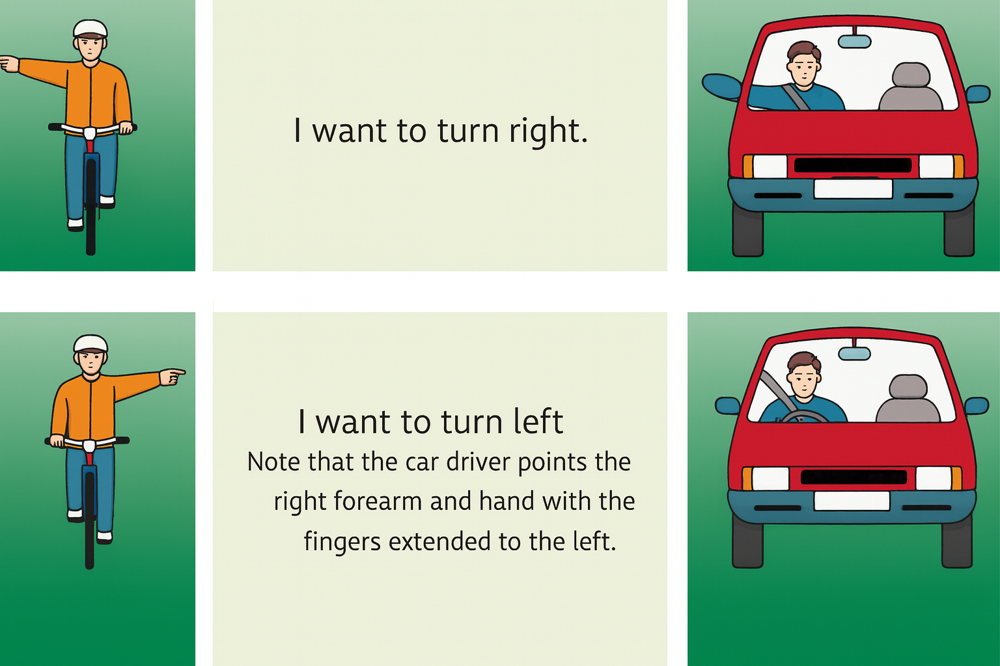
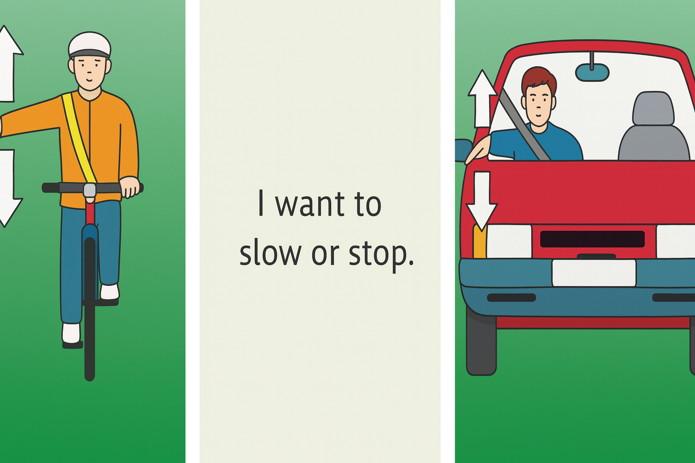
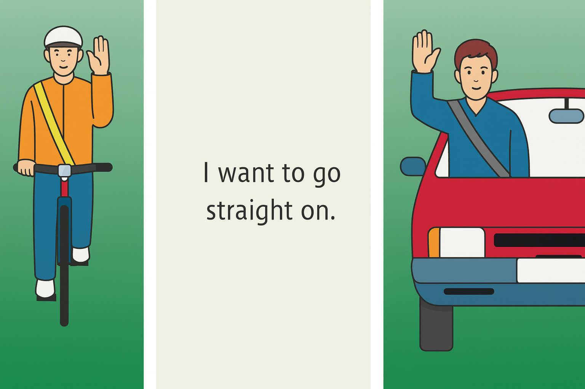
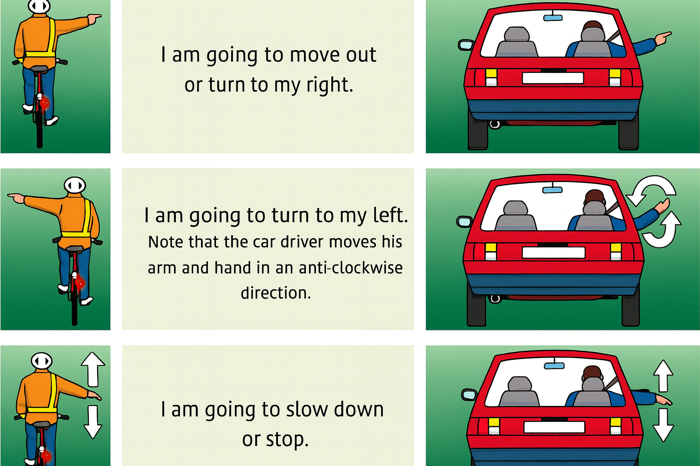

Master the hand signals required for your driving test




Testers sometimes mix car + cyclist questions.
Exact same principles — simpler because cyclists don't use windows.
They'll ask you to describe a signal ("Show me how you'd signal slowing down")
They'll ask you to physically do them in the seat
Do them confidently. Hesitation kills marks.
If you can picture these four moves, you're sorted.